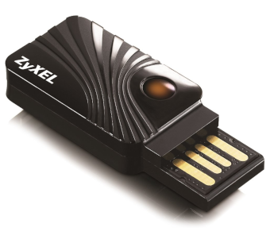

Имеется внешний USB WiFi-модем ZyXEL NWD2105 (в формафакторе USB-свистка). Здесь записывается, как его можно запустить в ОС Linux.

Вначале надо проверить, что ядро увидело вставленный в USB-гнездо модуль. Для этого надо дать команды:
> dmesg
> lsusb
Будет видно, что появилось устройство:
ID 0586:341E ZyXEL Communicaions Corp. NWD2105 802.11bgn Wireless Adapter [Ralink RT3070]
Значит, как минимум ядро видит железяку.
Далее надо "разблокировать" это устройство. Почему-то для wireless-устройств надо делать такую процедуру. Для разблокировки необходим пакет со странным названием rf-kill. Его надо установить, подключив компьютер через проводную сеть. Разблокировка проводится следующими командами:
> rfkill list
0: eeepc-wlan
Soft blocked: yes
Hard blocked: no
1: phy0
Soft blocked: yes
Hard blocked: no
> rfkill unblock 1 (да, писать нужно номер а не имя)
> rfkill list
0: eeepc-wlan
Soft blocked: yes
Hard blocked: no
1: phy0
Soft blocked: no
Hard blocked: no
Видно, что устройство разблокировалось и можно действовать дальше. Необходимо посмотреть, доступно ли само устройство в сетевой подсистеме Linux. Для этого необходимо выполнить команду:
> ip link
Устройство должно быть видно под каким-нибудь "удобным" именем типа wlxfcf528aba8a6, где wlx-это префикс имени, а остальные символы - MAC-адрес устройства. Состояние устройства (state) будет отображаться как DOWN.
Казалось бы, можно поднять интерфейс и подключиться к сети. Однако, попытка поднять интерфейс через утилиту ifconfig приводит к ошибке:
> ifconfig wlxfcf528aba8a6 up
SIOCSIFFLAGS: No such file or directory
А попытка поднять интерфейс через утилиту ip показывает такую ошибку:
> ip link set wlxfcf528aba8a6 up
RTNETLINK answers: No such file or directory
В интернетах пишут, что такое поведение возможно, если в системе не установлены пакеты:
> apt-get install firmware-linux-nonfree
> apt-get install firmware-linux
Если эти пакеты не были установлены, их надо установить. Затем, проще всего, следует перезагрузить систему. Чтобы в initram не попадали лишние данные (что повлияет на скорость загрузки системы), надо вначале поставить только firmware-linux-nonfree, и если после его установки сохранились вышеуказанные ошибки, надо поставить следующий пакет и опять перегрузиться.
Другими словами, признаком того, что прошивки установились и правильно заливаются на подключаемое устройство будет то, что команды поднятия интерфейса не будут показывать ошибку. Скорее всего, команды будут молча выполняться, но интерфейс все равно подниматься не будет. И вроде как это нормальное поведение.
Внимание! После перезагрузки надо не забывать разблокировать WiFi устройство, как было написано выше.
Для дальнейших действий необходимо, чтобы в системе стояли пакеты wpasupplicant, wireless-tools и iwd.
> apt-get install wpasupplicant wireless-tools iwd
Далее надо проверить как видится WiFi интерфейс в утилитах управления WiFi-сети:
> iw dev
phy#0
Interface wlxfcf528aba8a6
ifindex 3
wdev 0x1
addr fc:f5:28:ab:a8:a6
type managed
Интерфейс виден. Теперь можно просканировать эфир на предмет наличия WiFi сетей:
> iw wlxfcf528aba8a6 scan
В ответ будет выдан длинный перечень сетей со всеми техническими подробностями. Чтобы просто увидеть список имен сетей, можно дать команду:
> iw wlxfcf528aba8a6 scan | grep SSID
Все эти действия показывают, что WiFi устройство работает с радиоканалом и способно получать информацию по WiFi протоколу.
* * *
Далее надо обратить внимание, что даже на 2024 год существуют устройства и несвободные прошивки к ним, которые не могут работать с длинными идентификаторами устройства. То есть, новомодные идентификаторы в ядре, типа wlxfcf528aba8a6 не всегда поддерживаются. Вот пример:
Somehow, my firmware got trouble with long interface name. So I ran this command to prevent it:
ln -s /dev/null /etc/systemd/network/99-default.link
and it worked.
https://unix.stackexchange.com/questions/386925
А так же возможны проблемы с DHCP, если имя устройства будет длинее 13 символов:
Also, if you want to use the interface with DHCP, the name must have length < 14, due to this issue:
https://bugs.debian.org/cgi-bin/bugreport.cgi?bug=858580
https://stackoverflow.com/questions/24932172
Все это говорит о том, что чтобы не ловить фееричные баги, надо отключить новомодную выдачу имен в ядре. Для этого надо в файле /etc/default/grub добавить ядру опции:
GRUB_CMDLINE_LINUX="net.ifnames=0 biosdevname=0"
После чего следует дать команду update-grub и перезагрузить компьютер.
* * *
Подключение по WEP
Если роутер работает по устаревшему протоколу WEP, то вроде как можно дать команду:
> iwconfig wlxfcf528aba8a6 essid Wifi2Home key s:ABCDE12345
В этой команде в опции essid пишется имя роутера, к которому надо подключиться, взятое из предыдущей команды. Опция key задает пароль для подключения, он такой же как и для любых других WiFi-устройств. Префикс "s:" говорит о том, что пароль вводится символьно (иначе пришло бы пароль писать в HEX-кодировке). Команда молча выполнится.
После чего, в теории, команда поднятия интерфейса:
> ip link set wlxfcf528aba8a6 up
должна приводить к поднятию интерфейса и установке соединения. Проверить это на современных роутерах слишком сложно, поэтому здесь данный путь настройки не рассматривается.
Подключение по WPA/WPA2 (оно же WPA-PSK/WPA2-PSK)
Для установки соединения по WPA/WPA2, с учетом того, что соединение будет настраиваться по DHCP (как это происходит в большинстве WiFi подключений), то потребуется чтобы в системе была поддержка DHCP на уровне клиента. Для этого надо установить, как минимум, два пакета:
> apt-get install coredhcp-client systemd-resolved
Соединение будет устанавливаться через утилиту iwd. Ее настройка подробно описана в статье для дистрибутива Arch, но эта информация подходит и для Debian.
https://wiki.archlinux.org/title/Iwd
Вначале надо сделать стандартную настройку на получение IP-адреса для интерфейса wlan0 через DHCP в файле /etc/network/interfaces. Файл должен иметь примерно такой вид (следует обратить внимание, что теперь вместо wlxfcf528fbf8a6 будет простой wlan0):
auto lo
iface lo inet loopback
# The primary network interface
allow-hotplug ens3
iface ens3 inet dhcp
allow-hotplug wlan0
iface wlan inet dhcp
После изменения файла /etc/network/interfaces систему надо перегрузить, ибо в Debian не существует универсального адекватного и гарантированно работающего способа перечитать сетевые настройки.
Далее начинается настрока менеджера iwd. В файле /etc/iwd/main.conf следует прописать следующие опции:
[General]
EnableNetworkConfiguration=true
...
[Network]
RoutePriorityOffset=300
NameResolvingService=systemd
Далее, чтобы информацию о состоянии WiFi-сети могли читать все пользователи, а не только root, необходимо добавить настройки в D-Bus. Для этого следует создать файл /etc/dbus-1/system.d/iwd-allow-read.conf, и прописать в нем:
<!-- Allow any user to read iwd status information. Overrides some part
of /usr/share/dbus-1/system.d/iwd-dbus.conf. -->
<!DOCTYPE busconfig PUBLIC "-//freedesktop//DTD D-BUS Bus Configuration 1.0//EN"
"http://www.freedesktop.org/standards/dbus/1.0/busconfig.dtd">
<busconfig>
<policy context="default">
<deny send_destination="net.connman.iwd"/>
<allow send_destination="net.connman.iwd" send_interface="org.freedesktop.DBus.Properties" send_member="GetAll" />
<allow send_destination="net.connman.iwd" send_interface="org.freedesktop.DBus.Properties" send_member="Get" />
<allow send_destination="net.connman.iwd" send_interface="org.freedesktop.DBus.ObjectManager" send_member="GetManagedObjects" />
<allow send_destination="net.connman.iwd" send_interface="net.connman.iwd.Device" send_member="RegisterSignalLevelAgent" />
<allow send_destination="net.connman.iwd" send_interface="net.connman.iwd.Device" send_member="UnregisterSignalLevelAgent" />
</policy>
</busconfig>
Далее можно начать пробовать подключаться к WiFi сети. Вначале надо запустить сервис iwd:
> systemctl start iwd
По какой-то причине он не настраивается на автозапуск после установки пакета. Поэтому автозапуск для него надо активировать вручную:
> systemctl enable iwd
Далее можно получить список WiFi устройств:
> iwctl device list
Возможно, что устройство надо будет вывести из спящего режима командой:
> iwctl device wlan0 set-property Powered on
Далее можно получить список WiFi сетей командами:
> iwctl station wlan0 scan
> iwctl station wlan0 get-networks
И, наконец, можно подключиться к WiFi сети командой:
> iwctl --passphrase <ПарольНаWiFi> station wlan0 connect <ИмяWiFiСети>
Если все прошло правильно, интерфейс wlan0 будет поднят, и сеть появится:
> ip addr
...
4: wlan0: <BROADCAST,MULTICAST,DYNAMIC,UP,LOWER_UP> mtu 1500 qdisc mq state UP group default qlen 1000
link/ether e1:e5:28:fb:e8:a9 brd ff:ff:ff:ff:ff:ff
inet6 fe80::fef5:28ff:fefb:f8a6/64 scope link
valid_lft forever preferred_lft forever
Должны начать проходить пинги по IP:
> ping 8.8.8.8
PING 8.8.8.8 (8.8.8.8) 56(84) bytes of data.
64 bytes from 8.8.8.8: icmp_seq=1 ttl=106 time=18.7 ms
64 bytes from 8.8.8.8: icmp_seq=2 ttl=106 time=18.6 ms
64 bytes from 8.8.8.8: icmp_seq=3 ttl=106 time=6.78 ms
^C
--- 8.8.8.8 ping statistics ---
4 packets transmitted, 4 received, 0% packet loss, time 3004ms
rtt min/avg/max/mdev = 6.776/14.145/18.651/4.930 ms
Однако, резолвинг DNS-имен работать не будет:
> ping webhamster.ru
ping: webhamster.ru: Временный сбой в разрешении имен
А в довершение ко всему, после минуты работы WiFi сеть по каким-то причинам отключится.
Но самое интересное, что после перезагрузки компьютера, подключение с DNS начинает работать нормально.